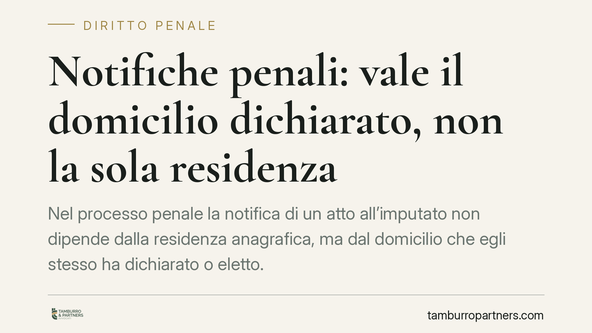

Notifiche penali: vale il domicilio dichiarato, non la sola residenza
Nel processo penale la notifica di un atto all'imputato non dipende dalla residenza anagrafica, ma dal domicilio che egli stesso ha dichiarato o eletto. Un errore o una dimenticanza possono far scattare notifiche presso il difensore, con il rischio di perdere termini decisivi. Capire come funziona il sistema degli artt. 148-161 c.p.p. è il primo passo per non subire conseguenze irreversibili.

Il caso e perché conta
Una domanda ricorrente riguarda la validità delle notifiche eseguite dove la persona vive di fatto, quando la residenza anagrafica indica un luogo diverso. Il tema tocca un principio noto: la residenza dichiarata al Comune ha valore di presunzione, ma cede davanti alla dimora abituale effettiva. Nel processo civile questo orientamento è consolidato, ancorato all'art. 43 del codice civile.
Nel processo penale, però, il quadro è diverso e più rigido. Qui non conta tanto dove l'imputato viva di fatto, quanto dove abbia dichiarato o eletto domicilio per ricevere gli atti. È una distinzione che genera equivoci frequenti e conseguenze pesanti.
Residenza, dimora e domicilio: tre cose diverse
L'art. 43 c.c. distingue con precisione. La residenza è il luogo di dimora abituale, come risulta all'anagrafe. La dimora è il luogo dove la persona si trova in un dato momento, anche temporaneamente. Il domicilio è la sede principale degli affari e degli interessi.
Nel diritto processuale penale entra in gioco un ulteriore concetto: il domicilio dichiarato o eletto ai fini delle notificazioni. La dichiarazione è l'indicazione di un luogo dove ricevere gli atti; l'elezione è l'individuazione di una persona (spesso il difensore) presso cui gli atti vengono notificati.
Il sistema delle notificazioni penali
Gli artt. 148 e seguenti del codice di procedura penale disciplinano le notifiche all'imputato. La regola cardine è l'art. 161 c.p.p.: al primo contatto con l'autorità, l'imputato viene invitato a dichiarare o eleggere domicilio. Da quel momento le notifiche seguono quell'indicazione.
Se l'imputato non dichiara né elegge domicilio, oppure se la notifica presso il domicilio dichiarato diventa impossibile, l'art. 161 comma 4 c.p.p. prevede che le notificazioni siano eseguite mediante consegna al difensore. È il punto più delicato: l'imputato potrebbe non venire mai a conoscenza materiale dell'atto, pur essendo la notifica pienamente valida.
La Corte di cassazione, in un orientamento consolidato (si segnala che qui il principio è richiamato senza citazione puntuale della singola pronuncia), ha ribadito che l'onere di comunicare ogni variazione del domicilio grava sull'imputato. Chi cambia casa e non aggiorna il domicilio dichiarato non può poi dolersi di non aver ricevuto l'atto.
Il decreto penale di condanna: attenzione ai termini
Un caso emblematico è il decreto penale di condanna. Viene emesso senza contraddittorio e notificato all'imputato, che ha quindici giorni per proporre opposizione ai sensi dell'art. 461 c.p.p.. Il termine decorre dalla notifica, non dalla conoscenza effettiva.
Se il decreto è stato validamente notificato presso il domicilio dichiarato, o presso il difensore in caso di irreperibilità, il termine corre comunque. Lasciarlo scadere significa rendere il decreto esecutivo, con la condanna che diventa definitiva.
L'onere della prova
Quando si contesta la validità di una notifica, occorre dimostrare l'irregolarità con elementi concreti. Nel penale il margine è ridotto rispetto al civile, perché la presunzione ruota attorno all'atto formale di dichiarazione o elezione, non alla vita quotidiana della persona.
Possono comunque rilevare: la prova che il domicilio dichiarato fosse divenuto inidoneo per causa non imputabile all'imputato; documentazione su spostamenti forzati o degenze; la dimostrazione che la relata di notifica presenti vizi formali. Sono valutazioni tecniche che vanno affrontate caso per caso.
Una nota sulle differenze con il civile
Nel processo civile la notifica segue la dimora effettiva e la residenza anagrafica ha valore presuntivo superabile con prova contraria. Nel penale il baricentro si sposta sull'atto di domiciliazione. Confondere i due regimi è un errore ricorrente, perché porta a difese impostate su presupposti sbagliati.
Cosa fare in concreto
- Dichiara o eleggi domicilio con attenzione al primo contatto con l'autorità: valuta se indicare un recapito personale o eleggere presso il difensore.
- Comunica sempre ogni cambio di indirizzo o recapito all'autorità procedente e al tuo difensore, per iscritto e conservando la ricevuta.
- Non ignorare gli atti consegnati al difensore: chiedi conferma periodica sullo stato del procedimento.
- Verifica subito la relata di notifica di ogni atto ricevuto: data, luogo, modalità e soggetto consegnatario.
- Agisci entro i termini: davanti a un decreto penale di condanna consulta senza indugio un legale, perché i quindici giorni dell'art. 461 c.p.p. sono perentori.
Disclaimer
Contributo informativo a cura di Tamburro & Partners - Avv. Giuseppe Tamburro. Non costituisce parere legale.
Ogni condominio ha una storia a sé.
Se gestisci un'amministrazione e vuoi un confronto su una specifica questione condominiale, scrivi allo studio. Ti rispondiamo entro un giorno lavorativo.